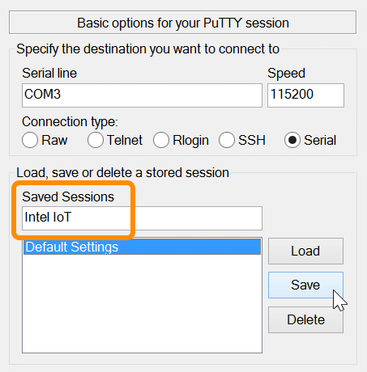
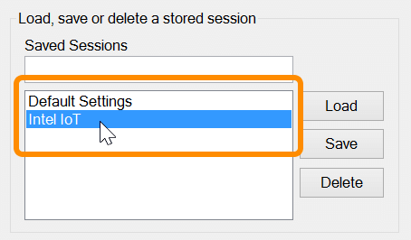

Using PuTTY - Windows
Cancel/exit an already submitted command
If you submitted a command and it is taking a long time to complete, or you do not want to complete it, quit the process using Ctrl+C.
-
Make sure the PuTTY terminal window has focus.
-
Type Ctrl+C to send a break command.
Save connection settings for re-use
To quickly connect to the same IoT board the next time, save the session settings.
-
Enter in your serial connection details, including serial line and speed.
-
Under “Saved Sessions”, enter a descriptive name for your session presets. Then click “Save”.

- The next time you want to connect using those presets, double-click on the saved session name.

Return to Shell Access - Windows ».